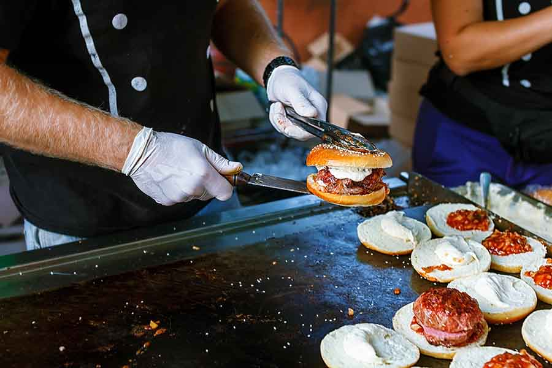
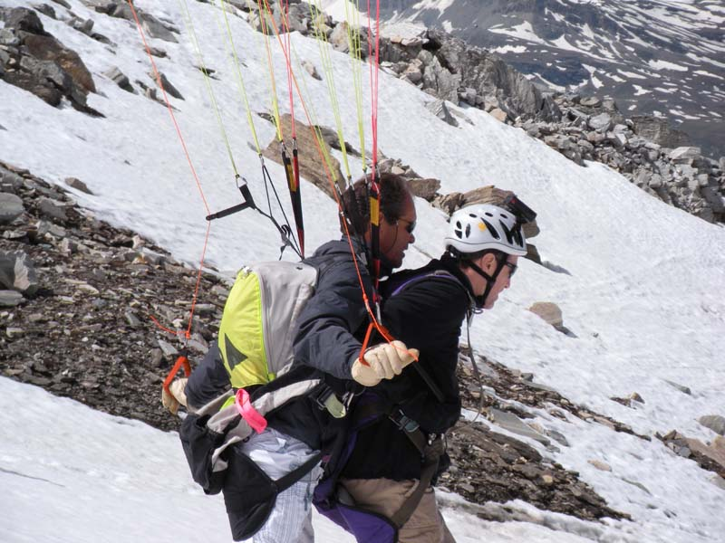

Essay
Everything For A Reason
Entering the mood-lit cafeteria-turned-dance floor, I ducked under the hanging crepe paper to the relative safety and anonymity of a dark corner. I scanned the room. It was mostly jocks,…
Essay
Entering the mood-lit cafeteria-turned-dance floor, I ducked under the hanging crepe paper to the relative safety and anonymity of a dark corner. I scanned the room. It was mostly jocks,…
Essay
[This piece was originally published summer of 2011 in the now shuttered--which I don't think was my fault--New York Press, a free "throwaway" paper available in some of the finest sleazy dive bars…

Essay
I worry a lot. It’s most likely something I got from my mother. She worries…she worries when I worry, and she worries when I don’t. I’ve inherited her innate ability to know when to worry, and…

Essay
Standing, frozen-still, my heart is pounding through my chest. At this elevation I can feel the thinness of the air, the cool breeze forcing my eyes shut to wet them. The silence is deafening. I open…
Essay
What and if. Together two of the most powerful words in the English language. They represent endless possibilities in life and are at the very inception of millions of ideas big and small. Used…
Essay
As my delayed 5:37 train out of New York rolled into Newark’s Penn Station, I was feeling the brunt of a fierce but familiar bi-temple headache. As I stood to leave the train, I saw my good friend…
Steven writes short fiction, personal essays, and occasional field reports from life abroad. Former corporate grinder turned legal Barcelona resident. My goal in writing: make you feel something, anything.
Essay
Steven · Writer, traveler, reformed corporate grinder
Well, I worked hard, challenged convention and, through equal parts luck, hard work, and some good intuition, made more out of myself than I ever thought possible. And then, mid-stride of what was proving to be a long and very satisfying run with a major media company, I tripped. I didn't fall and completely regained my balance, but it startled me.
It was then I reflected, "If I died tomorrow, would I consider my life a success and well-lived?" Hmmm, personally and professionally successful, yes. But, well-lived? I thought of my 3-hour daily commute, social events skipped to tackle an email backlog, and proclamations that began "Someday, I'm going to…" No, not as well-lived as I wanted to believe.
A couple years later, I was standing in an empty living room, soulmate of 15 years at my side, and four-legged rescue child at our feet, awaiting a taxi. In front of us, four suitcases, two bike bags, and Zoë's travel crate. Our lives, packed.
Fast forward two years and I still find it a tad unbelievable we are legal residents of Barcelona, Spain — afraid to pinch myself as I may wake from this most splendid of dreams.
My preferred format is short story, in both fiction and creative non-fiction genres; but you'll also find blog posts with "lessons learned" advice scribblings, stupid Steven stories, and even some portfolio pieces created for amazing friends who have had more confidence in my abilities than I may ever have.
My goal in writing is simple: make people feel something, anything — happy, horny, sad, superior to me, sorry for me, embarrassed for me. I don't care. And if I do make you feel something, I'd appreciate a note.